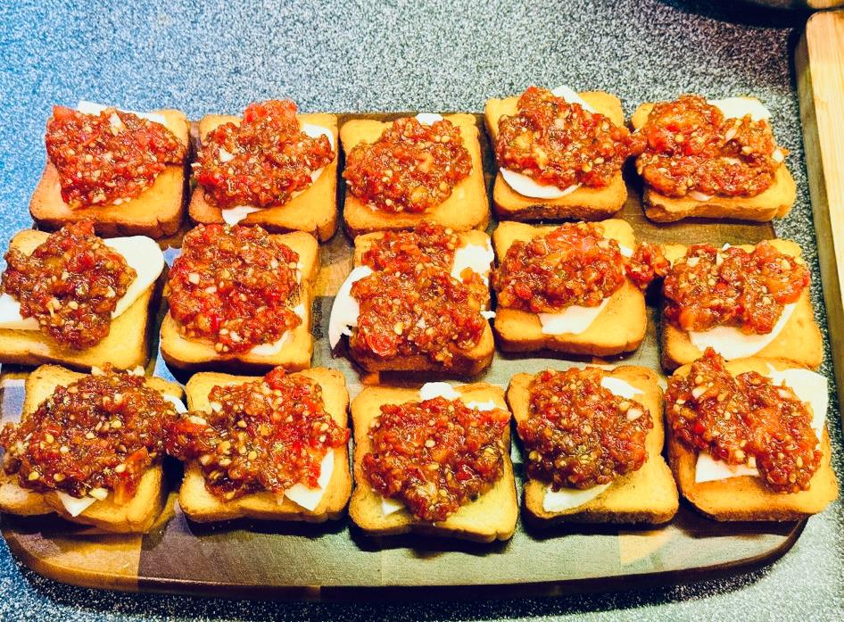

Tomato Mozzarella Bruschettas
Ingredients
- Tomatoes
- Basil
- Garlic
- Olive oil
- Balsamic
- Red pepper
- Oregano
- Salt
- Black pepper
- Honey
- Mozzarella cheese
- Bread
Instructions
- Blend the tomatoes, but not too much — leave some larger pieces in there.
- Strain off the excess liquid so only the thick part remains.
- Finely chop the basil and garlic.
- Mix everything together, add the spices, and a little bit of honey.
- Lightly toast the bread.
- Place mozzarella on the bread, add the tomato mixture, and garnish with a bit more basil.